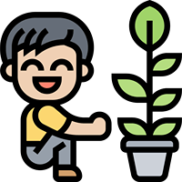

Si hay plantas hay vida. Es por ello que llenamos nuestras casas «de verde», tenemos huertos urbanos y las terrazas están pobladas de pequeñas macetas. Aunque las plantas requieran muchos cuidados "no solo regarlas, sino también debemos preocuparnos de en qué lugar ponerlas para que tengan la mejor luz, darles nutrientes, pulverizarlas..." seguimos comprándolas y regalándolas.
Y es que, las plantas siempre han formado parte de nuestra vida. La especie humana ha evolucionado en un ambiente natural, en la que se cumplen los ciclos vitales: los animales crecen, las flores pasan de flor a fruto... nuestro entorno perfecto es tradicionalmente la naturaleza, y por ello colmar de plantas nuestro hogar es un paso natural.
Se acerca la temporada de frio
Veni a conocer nuestro vivero de otoño-invierno!!!
No descuides tu jardin en esta epoca del año...
Descubre la belleza de cada estacion,
dale vida a cada dia!!!
Adopta una planta...
Nosotros te la enviamos...
Te damos un instructivo para cuidarla!!!